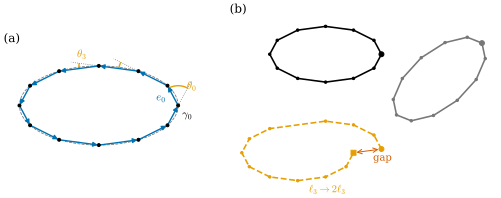
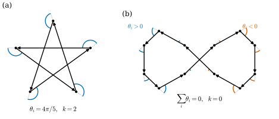
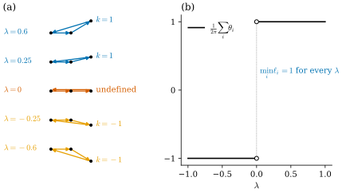

37.4 Discrete Plane Curves
Goals
- discrete curve의 edge vector를 smooth curve의 differential \(d\gamma\)를 edge 위에서 적분한 것으로 읽고, 그 성질(합이 위치의 차이, closed curve에서 합이 \(0\))을 증명할 수 있다.
- regular discrete curve를 정의하고, 그것이 다각형을 piecewise linear map으로 볼 때의 locally injective와 같음을 증명할 수 있다.
- fundamental theorem of discrete plane curves(edge length와 turning angle이 곡선을 rigid motion을 제외하고 정한다)와 closing condition을 증명하고, 복원 algorithm을 구현할 수 있다.
- discrete turning number를 정의하고, sampling과 연속적인 변형에서 그것이 smooth turning number와 어떻게 맞는지 설명할 수 있다.
Prerequisites
- Chapter 32: discrete curve Definition 32.2.8, discrete tangent와 normal Definition 32.2.11, turning angle Definition 32.3.1, dual length (32.3.3), total turning angle Proposition 32.3.4, TOTAL for \(\kappa^A\) Proposition 32.4.7.
- Section 37.1: curvature에서 곡선을 복원하는 (37.1.4)와 closing condition Proposition 37.1.7. Section 37.2: turning number, regular homotopy, Theorem 37.2.10.
- rigid motion of the plane(Proposition 4.4.7 앞의 정의)과 signed angle (5.6.2).
Motivation
Section 37.3까지는 smooth curve를 다뤘다. plane curve에서 얻은 결론은 셋이었다. curvature를 두 번 적분하면 곡선이 rigid motion을 제외하고 복원되고((37.1.4)), 닫히려면 조건이 둘 필요하며(Proposition 37.1.7), turning number는 regular homotopy에서 변하지 않는다(Theorem 37.2.10). 이 절은 같은 세 결론을 다각형에서 다시 얻는다.
놀라운 것은 discrete 판이 더 단순하고 더 정확하다는 점이다. smooth 판에서는 적분이 필요했고, 실제로 계산하려면 수치 오차를 감수해야 했다(Example 37.1.8). 다각형에서는 적분이 유한 합이 되어 모든 것이 반올림 오차를 빼고 정확하다. 다만 regular라는 조건을 다각형에 맞게 다시 정해야 한다. edge length가 \(0\)이 아니라는 것만으로는 부족하다는 것이 이 절의 교훈 가운데 하나다.
Edge Vectors as the Discrete Differential
discrete curve는 이웃한 두 점이 서로 다른 점의 순서 있는 목록 \(\gamma_0, \dots, \gamma_{n-1}\)이다(Definition 32.2.8). edge \(i\)는 \(\gamma_i\)에서 \(\gamma_{i+1}\)로 가고, edge vector, edge length, discrete tangent는 \(e_i = \gamma_{i+1} - \gamma_i\), \(\ell_i = \abs{e_i}\), \(\mathbf{t}_i = e_i/\ell_i\)다(Definition 32.2.11). closed curve에서는 첨자를 \(n\)을 법으로 읽는다.
vertex 위치를 vertex마다 \(\R^2\)의 값을 주는 함수로 보자. vertex를 행으로 쌓은 \(n \times 2\) 행렬을 \(\gamma\)라 쓰면 edge vector를 행으로 쌓은 행렬은
이다. closed curve이면 \(D\)는 \(n \times n\)이고 \(j = i + 1\)을 \(n\)을 법으로 읽으며, open curve이면 \(D\)는 \((n - 1) \times n\)이다. 이 행렬 \(D\)는 각 edge의 끝 vertex의 값에서 시작 vertex의 값을 빼는 행렬이다.
Section 37.1의 Smooth vs. Discrete 상자에서 보았듯이, 다각형의 trace를 edge \(i\) 위에서 arc length로 매개화하면 미적분학의 기본정리에서 \(e_i = \int_{s_i}^{s_{i+1}}\gamma'\,ds\)이다. 곧 edge vector는 smooth differential \(d\gamma\)를 그 edge 위에서 적분한 값이고, 이 관점에서 \(D\)는 “discrete differential”이다. 다음 성질들은 smooth의 \(\int_a^b\gamma'\,ds = \gamma(b) - \gamma(a)\)를 그대로 옮긴 것인데, 근사가 아니라 정확한 등식이다.
Proposition 37.4.1 (sums of edge vectors). (a) open이든 closed이든 \(0 \le i \lt j\)에 대하여
이다(closed curve에서는 \(j \le n\)이고 \(\gamma_n = \gamma_0\)으로 읽는다). (b) closed curve에서는 \(\sum_{k=0}^{n-1}e_k = 0\)이다. 행렬로는 \(\mathbf{1}^{\mathsf T}D = 0\)이다. (c) \(D\gamma = D\tilde\gamma\)일 필요충분조건은 \(\tilde\gamma\)가 \(\gamma\)를 평행이동한 것(모든 \(i\)에서 \(\tilde\gamma_i = \gamma_i + c\))이다.
Proof. (a) \(\sum_{k=i}^{j-1}(\gamma_{k+1} - \gamma_k)\)는 telescoping sum이다. (b) closed curve에서 (a)를 \(i = 0\), \(j = n\)에 쓰면 \(\gamma_n - \gamma_0 = 0\)이다. 행렬로는 \(D\)의 각 열에 \(-1\)과 \(1\)이 하나씩 있다(각 vertex는 한 edge의 시작이고 한 edge의 끝이다). (c) \(D(\tilde\gamma - \gamma) = 0\)이면 이웃한 vertex에서 \(\tilde\gamma_i - \gamma_i\)의 값이 같으므로 모든 \(i\)에서 같은 vector \(c\)다. 거꾸로 평행이동은 차이를 바꾸지 않는다.
(c)는 edge vector가 “위치에서 평행이동을 뺀 정보”를 모두 담는다는 뜻이다. 곧 edge vector만 알면 처음 위치 하나로 곡선이 정해진다. 다음 소절은 한 걸음 더 나간다. edge vector마저 몰라도, edge length와 turning angle만으로 회전까지 제외하고 곡선이 정해진다.
turning angle \(\theta_i\)(Definition 32.3.1)는 vertex에 붙는 양이다. Section 32.3이 본 대로, smooth curve에서 vertex \(i\) 근처 조각(길이 \(\bar\ell_i\)) 위의 curvature의 적분, 곧 그 조각에서 tangent가 돈 각을 옮긴 것이다(Section 32.3). edge vector가 edge 위의 적분량이듯 turning angle은 vertex 둘레 조각 위의 적분량이다.
Regular Discrete Curves
smooth curve의 regularity는 \(d\gamma\)가 \(0\)이 아니라는 조건이었다. 그 discrete 판은 \(e_i \neq 0\)이고, 이것은 Definition 32.2.8에 이미 들어 있다. 그러나 이것만으로는 부족하다. 강의 슬라이드가 지적하듯, edge length가 \(0\)이 아니어도 진행 방향이 정반대로 꺾일 수 있고, 그 순간을 지나며 turning number가 바뀔 수 있다 [CMU-DDG L11](Example 37.4.15).
Definition 37.4.2 (regular discrete curve). discrete curve가 두 edge를 갖는 모든 vertex \(i\)(closed curve이면 모든 vertex, open curve이면 양 끝을 뺀 vertex)에서 \(\mathbf{t}_i \neq -\mathbf{t}_{i-1}\)을 만족하면 regular discrete curve(정칙 이산 곡선)라 한다. 강의 슬라이드는 같은 대상을 곡선의 discrete immersion이라고도 부른다.
곧 regular discrete curve는 어느 vertex에서도 왔던 길로 되돌아가지 않는 다각형이다. 그러면 모든 vertex에서 turning angle \(\theta_i \in (-\pi, \pi)\)가 정의된다(Definition 32.3.1). Proposition 32.3.4의 가정 “모든 vertex에서 \(\mathbf{t}_i \neq -\mathbf{t}_{i-1}\)인 closed discrete curve”는 곧 closed regular discrete curve다. 다각형을 연속 map으로 보면 이 조건이 smooth의 “immersion”과 같은 역할을 한다는 것이 다음 명제다.
Proposition 37.4.3 (regular means locally injective). discrete curve의 trace를 edge \(i\)는 \([i, i + 1]\) 위에 선형으로 매개화한 continuous map \(\Gamma\)(closed curve이면 주기 \(n\))로 보자. 그러면 discrete curve가 regular일 필요충분조건은 \(\Gamma\)가 locally injective인 것, 곧 모든 parameter \(u\)에 대해 \(u\)의 근방이 있어 그 위에서 \(\Gamma\)가 injective인 것이다.
Proof. edge의 내부 \(u \in (i, i + 1)\)에서는 \(\Gamma(u) = \gamma_i + (u - i)e_i\)이고 \(e_i \neq 0\)이므로 \((i, i + 1)\) 위에서 injective이다. 따라서 문제는 vertex \(u = i\)뿐이다. \(0 \lt \varepsilon \lt 1\)이면 \([i - \varepsilon, i + \varepsilon]\)의 상은 두 선분 \(\{\gamma_i - \sigma\ell_{i-1}\mathbf{t}_{i-1}\}\)과 \(\{\gamma_i + \sigma\ell_i\mathbf{t}_i\}\)(\(0 \le \sigma \le \varepsilon\))의 합집합이다. 첫째 선분 위의 점 \(\gamma_i - a\mathbf{t}_{i-1}\)과 둘째 선분 위의 점 \(\gamma_i + b\mathbf{t}_i\)(\(a, b \gt 0\))가 같으려면 \(b\mathbf{t}_i = -a\mathbf{t}_{i-1}\), 곧 \(\mathbf{t}_i = -\mathbf{t}_{i-1}\)이고 \(a = b\)여야 한다. 따라서 \(\mathbf{t}_i \neq -\mathbf{t}_{i-1}\)이면 두 선분은 \(\gamma_i\)에서만 만나고 \(\Gamma\)는 \([i - \varepsilon, i + \varepsilon]\)에서 injective이다. 거꾸로 \(\mathbf{t}_i = -\mathbf{t}_{i-1}\)이면 작은 \(a\)마다 \(\Gamma(i - a/\ell_{i-1}) = \Gamma(i + a/\ell_i)\)이므로 \(i\)의 어떤 근방에서도 injective가 아니다. open curve의 양 끝 vertex에는 edge가 하나뿐이라 언제나 injective이다.
Example 37.4.4. (a) 원에 내접한 정 \(n\)각형(\(n \ge 3\))은 \(\theta_i = 2\pi/n \lt \pi\)이므로 regular다. (b) ellipse를 \(\gamma_i = \gamma(2\pi i/16)\)으로, flower curve를 \(\gamma_i = \gamma(2\pi i/40)\)으로 sampling한 다각형은 regular다. flower 다각형의 turning angle은 \(-1.130\)에서 \(0.994\) 사이에 있다(Example 32.3.2). (c) 정오각형의 vertex를 하나씩 건너뛰며 잇는 pentagram은 모든 turning angle이 \(4\pi/5 \lt \pi\)이므로 regular다. 스스로 가로지르지만 regular다. smooth의 figure-eight처럼 regular는 국소적인 조건이다.
Non-example 37.4.5. open discrete curve \((0, 0), (2, 0), (3, 1), (1.5, -0.5)\)는 vertex \((3, 1)\)에서 \(\mathbf{t}_1 = (1, 1)/\sqrt2\), \(\mathbf{t}_2 = -(1, 1)/\sqrt2\)이므로 regular가 아니다. edge length는 모두 \(0\)이 아니지만 셋째 edge가 둘째 edge를 거슬러 \((2, 0)\)을 지나 더 내려간다. Proposition 37.4.3의 \(\Gamma\)는 \((3, 1)\) 근처에서 같은 점을 두 번 지난다.
The Fundamental Theorem of Discrete Plane Curves
smooth 복원 (37.1.4)의 세 단계(각 → tangent → 위치)를 그대로 옮기자. edge \(i\)의 방향 각을 \(\varphi_i\)라 하면 turning angle의 정의에서 \(\varphi_i = \varphi_{i-1} + \theta_i\)이고(Proposition 32.3.4의 증명), 위치는 edge vector를 더한 것이다((37.4.2)). 두 적분이 두 번의 누적 합이 된다.

Figure 37.4.1의 (a)에서 \(\gamma_0\)부터 화살표를 따라가 보자. 각 vertex에서 하는 일은 둘뿐이다. 진행 방향을 \(\theta_i\)만큼 돌리고, 그 방향으로 \(\ell_i\)만큼 간다. (b)는 이 두 숫자 목록만으로 다각형을 다시 그린 것이다. 출발점과 처음 방향을 바꾸면 회색 다각형처럼 전체가 옮겨지고 돌아갈 뿐 모양은 그대로다. 숫자 하나를 바꾸면(주황) 모양이 바뀌고 닫히지도 않는다. 이것을 정리로 쓰면 다음과 같다.
Theorem 37.4.6 (fundamental theorem of discrete plane curves). \(m \ge 1\)이라 하자. (a) (존재와 유일성) 양수 \(\ell_0, \dots, \ell_{m-1}\), 각 \(\theta_1, \dots, \theta_{m-1} \in (-\pi, \pi)\), 점 \(p_0\), 각 \(\varphi_0\)을 주면, vertex가 \(m + 1\)개인 open regular discrete curve 가운데 \(\gamma_0 = p_0\), \(\mathbf{t}_0 = (\cos\varphi_0, \sin\varphi_0)\)이고 edge length가 \(\ell_i\), vertex \(i\)의 turning angle이 \(\theta_i\)인 것이 꼭 하나 있다. 그것은 (37.4.3)으로 주어진다. (b) (rigid motion을 제외한 유일성) vertex가 \(m + 1\)개인 두 open regular discrete curve의 edge length와 turning angle이 모두 같으면, 한 곡선을 다른 곡선으로 보내는 rigid motion of the plane \(\psi(p) = R_\alpha p + c\)가 꼭 하나 있다.
이 정리가 말하는 것. 다각형의 모양은 “얼마나 가고 얼마나 꺾는가”의 목록이 정확히 정한다. smooth 판(Theorem 4.4.10)과 달리 적분도, ODE의 존재 정리도 필요 없다.
Proof idea: 첫 edge의 위치와 방향을 정하면 나머지는 귀납법으로 하나씩 정해진다. 유일성도 같은 귀납법이다.
Proof. (a) 존재. (37.4.3)으로 \(\gamma_0, \dots, \gamma_m\)을 정하면 \(e_i = \ell_i\mathbf{t}_i\)이고 \(\abs{\mathbf{t}_i} = 1\)이므로 edge length는 \(\ell_i \gt 0\)이고, 이웃한 vertex가 다르므로 discrete curve다. vertex \(i\)(\(1 \le i \le m - 1\))에서 \(\mathbf{t}_i = (\cos(\varphi_{i-1} + \theta_i), \sin(\varphi_{i-1} + \theta_i)) = R_{\theta_i}\mathbf{t}_{i-1}\)이고 \(\theta_i \in (-\pi, \pi)\)이므로 \(\mathbf{t}_i \neq -\mathbf{t}_{i-1}\)이고 turning angle은 \(\theta_i\)다(Lemma 5.6.6(a): \(v = R_\varphi u\), \(\varphi \in (-\pi, \pi)\)이면 \(\angle(u, v) = \varphi\)). 따라서 regular이고 주어진 자료를 갖는다. 유일성. 같은 자료를 갖는 곡선 \(\tilde\gamma\)가 있다고 하자. \(i\)에 대한 귀납법으로 \(\tilde{\mathbf{t}}_i = \mathbf{t}_i\)와 \(\tilde\gamma_{i+1} = \gamma_{i+1}\)을 보인다. \(i = 0\)에서는 가정에서 \(\tilde{\mathbf{t}}_0 = \mathbf{t}_0\)이고 \(\tilde\gamma_1 = p_0 + \ell_0\mathbf{t}_0 = \gamma_1\)이다. \(\tilde{\mathbf{t}}_{i-1} = \mathbf{t}_{i-1}\)이면 turning angle의 정의((32.3.1))에서 \(\tilde{\mathbf{t}}_i = R_{\theta_i}\tilde{\mathbf{t}}_{i-1} = R_{\theta_i}\mathbf{t}_{i-1} = \mathbf{t}_i\)이고, \(\tilde\gamma_{i+1} = \tilde\gamma_i + \ell_i\tilde{\mathbf{t}}_i = \gamma_{i+1}\)이다. (b) 두 곡선을 \(\gamma, \tilde\gamma\)라 하고 \(\mathbf{t}_0 = (\cos\varphi_0, \sin\varphi_0)\), \(\tilde{\mathbf{t}}_0 = (\cos\tilde\varphi_0, \sin\tilde\varphi_0)\)이라 하자. \(\alpha = \tilde\varphi_0 - \varphi_0\), \(c = \tilde\gamma_0 - R_\alpha\gamma_0\), \(\psi(p) = R_\alpha p + c\)로 두자. \(\psi\)는 길이를 보존하고 \(R_\alpha\)는 회전과 교환하므로 \(\psi \circ \gamma\)의 edge vector는 \(R_\alpha e_i\), tangent는 \(R_\alpha\mathbf{t}_i\)이고, edge length와 turning angle이 \(\gamma\)와 같다. 또 \(\psi(\gamma_0) = \tilde\gamma_0\)이고 첫 tangent는 \(R_\alpha\mathbf{t}_0 = \tilde{\mathbf{t}}_0\)이다. 따라서 (a)의 유일성에서 \(\psi \circ \gamma = \tilde\gamma\)이다. \(\psi\)의 유일성: \(R_\alpha p + c\) 꼴의 map이 \(\gamma\)를 \(\tilde\gamma\)로 보내면 \(R_\alpha e_0 = \tilde e_0\)에서 \(\alpha\)가 (\(2\pi\)의 정수배를 제외하고) 정해지고, \(\psi(\gamma_0) = \tilde\gamma_0\)에서 \(c\)가 정해진다.
Theorem 37.4.7 (closing conditions for discrete curves). \(n \ge 3\)이고 양수 \(\ell_0, \dots, \ell_{n-1}\)과 각 \(\theta_0, \dots, \theta_{n-1} \in (-\pi, \pi)\)가 주어졌다고 하자. \(\varphi_0\)을 하나 고르고 \(\varphi_i\)를 (37.4.3)으로 정하자(\(i = 0, \dots, n - 1\)). 이 자료를 edge length와 turning angle로 갖는 closed regular discrete curve가 있을 필요충분조건은
이다. (ii)는 \(\varphi_0\)의 선택에 무관하다. 그런 곡선은 rigid motion을 제외하고 하나뿐이다.
Proof. (\(\Leftarrow\)) (37.4.3)으로 \(\gamma_0 = p_0, \gamma_1, \dots, \gamma_n\)을 만든다. (ii)와 (37.4.2)에서 \(\gamma_n - \gamma_0 = \sum_{i=0}^{n-1}\ell_i\mathbf{t}_i = 0\)이므로 \(\gamma_0, \dots, \gamma_{n-1}\)은 closed discrete curve이고(\(\gamma_{n-1} \neq \gamma_0\)은 \(\ell_{n-1} \gt 0\)에서 나온다) edge \(n - 1\)은 \(\gamma_{n-1}\)에서 \(\gamma_0\)으로 간다. vertex \(1, \dots, n - 1\)의 turning angle은 Theorem 37.4.6(a)의 증명과 같이 \(\theta_i\)다. vertex \(0\)에서는 들어오는 tangent가 \(\mathbf{t}_{n-1}\), 나가는 tangent가 \(\mathbf{t}_0\)이고, (i)에서 \(\varphi_0 = \varphi_{n-1} + \theta_0 - 2\pi k\)이므로 \(\mathbf{t}_0 = R_{\theta_0}\mathbf{t}_{n-1}\)이다. \(\theta_0 \in (-\pi, \pi)\)이므로 vertex \(0\)의 turning angle도 \(\theta_0\)이고, 모든 vertex에서 regular다. (\(\Rightarrow\)) 그런 곡선이 있으면 (i)은 Proposition 32.3.4이다. 그 곡선의 edge \(0\)의 각을 \(\varphi_0\)으로 잡으면 (37.4.3)의 \(\mathbf{t}_i\)가 그 곡선의 tangent이고(Theorem 37.4.6(a)의 유일성 논법), (ii)는 Proposition 37.4.1(b)다. \(\varphi_0\)을 \(\alpha\)만큼 바꾸면 (ii)의 합은 \(R_\alpha\)를 곱한 것이 되어 \(0\)인지가 바뀌지 않는다. 유일성은 Theorem 37.4.6(b)를 vertex \(0, \dots, n - 1\), 곧 edge \(0, \dots, n - 2\)에 쓰면 된다(남은 edge는 \(\gamma_{n-1}\)과 \(\gamma_0\)을 잇는 것으로 정해진다).
smooth의 Proposition 37.1.7과 나란히 놓으면, (i)은 “tangent가 처음 방향으로 돌아온다”, (ii)는 “위치가 처음 점으로 돌아온다”로 같은 뜻이다. 차이는 적분이 합으로 바뀌었다는 것, 그리고 discrete 판에서는 이 합을 반올림 오차만으로 정확히 계산할 수 있다는 것이다.
Example 37.4.8 (reconstructing sampled curves). ellipse를 \(n = 16\), flower curve를 \(n = 40\)으로 sampling한 다각형에서 \((\ell_i, \theta_i)\)를 읽고, 임의의 \(p_0 = (1, -2)\), \(\varphi_0 = 0.3\)으로 Implementation의 (37.4.3)을 적용하자. 두 경우 모두 \(\abs{\gamma_n - \gamma_0}\)이 \(2 \times 10^{-15}\) 미만이고, 원래 다각형에 가장 잘 맞는 rigid motion으로 겹친 최대 거리도 \(2 \times 10^{-15}\) 미만이다. smooth의 Example 37.1.8에서는 같은 ellipse를 복원하는 데 \(m = 800\)개의 sample로도 \(4 \times 10^{-5}\)의 오차가 남았다. discrete 판에는 discretization 오차가 없다.
Verification: verify/v-37-4-discrete-plane-curves.py
Example 37.4.9 (regular polygons). 모든 \(\ell_i = \ell \gt 0\)이고 모든 \(\theta_i = 2\pi/n\)이면 (i)은 \(n \cdot 2\pi/n = 2\pi\)로 성립하고, (ii)는 \(\varphi_0 = 0\)에서 \(\ell\sum_{i=0}^{n-1}(\cos(2\pi i/n), \sin(2\pi i/n))\)이다. 복소수로 쓰면 \(\ell\sum_i\omega^i = \ell(\omega^n - 1)/(\omega - 1) = 0\)(\(\omega = e^{2\pi\mathrm{i}/n} \neq 1\))이므로 (ii)도 성립한다. 따라서 정 \(n\)각형(한 변 \(\ell\))이 rigid motion을 제외하고 유일하게 나온다.
Non-example 37.4.10. \(\theta = (\pi/2, \pi/2, \pi/2, \pi/2)\)는 (i)을 만족한다. \(\ell = (1, 1, 1, 1)\)이면 (ii)도 만족해 정사각형이 나온다. 그러나 \(\ell = (1, 2, 1, 1)\)이면 \(\varphi_0 = 0\)에서 (ii)의 합이 \((1, 0) + (0, 2) + (-1, 0) + (0, -1) = (0, 1) \neq 0\)이므로 이 자료를 갖는 closed discrete curve는 없다. 직각만으로 꺾이는 닫힌 사각형은 마주 보는 변의 길이가 같아야 한다.
The Discrete Turning Number
Proposition 32.3.4는 closed regular discrete curve의 turning angle의 합이 \(2\pi\)의 정수배임을 증명했다. 그 정수에 이름을 준다.
Definition 37.4.11 (discrete turning number). closed regular discrete curve \(\gamma\)의 정수
를 \(\gamma\)의 discrete turning number(이산 회전수)라 한다.
정수라는 것은 Proposition 32.3.4가 보장하므로 다시 증명하지 않는다. smooth의 (37.2.1)과 비교하면 \(\int\kappa_s\,ds\)가 integrated curvature \(\kappa^A_i = \theta_i\)의 합으로 바뀌었다. turning angle을 discrete curvature로 고르면 total curvature가 smooth의 것과 같은 정수 구조를 정확히 갖는다.
Example 37.4.12 (discrete turning numbers). (a) 반시계 방향 정 \(n\)각형은 \(k = 1\), 시계 방향은 \(k = -1\)이다. (b) pentagram(정오각형의 vertex를 하나씩 건너뛰며 반시계 방향으로 이은 것)은 모든 \(\theta_i = 4\pi/5\)이므로 \(k = 5 \cdot (4\pi/5)/2\pi = 2\)이다. 스스로 가로지르므로 rotation index theorem의 polygon 판(Theorem 5.6.11, simple이면 \(\pm1\))과 모순되지 않는다. (c) figure-eight \((\sin t, \sin t\cos t)\)을 12개 점으로 sampling한 다각형은 왼쪽 고리에서 \(\theta_i \gt 0\), 오른쪽 고리에서 \(\theta_i \lt 0\)이고 합이 \(0\)이다(\(k = 0\)). ellipse(\(n = 16\))와 flower curve(\(n = 40\))의 다각형은 \(k = 1\)이다.
Verification: verify/v-37-4-discrete-plane-curves.py

0), 오른쪽 고리의 꼭짓점에는 주홍 호(theta_i < 0)가 있고, 아래에 sum theta_i = 0, k = 0이라고 적혀 있다.">Figure 37.4.2의 (a)에서 꼭대기 vertex부터 별을 따라가 보자. 어느 vertex에서나 왼쪽으로 크게(\(144^\circ\)) 꺾는다. 다섯 번 꺾으면 \(720^\circ\)이므로 진행 방향은 두 바퀴 돈다. (b)의 figure-eight 다각형은 왼쪽 고리를 도는 동안 파란 호만, 오른쪽 고리를 도는 동안 주홍 호만 지나간다. 두 고리의 크기가 같아 꺾은 양도 정확히 상쇄된다. smooth figure-eight의 tangent angle이 \(-0.75\)바퀴까지 내려갔다가 돌아오던 것(Figure 37.2.1(b))과 같은 그림이다.
smooth curve를 sampling한 다각형의 discrete turning number는 언제 smooth turning number와 같은가? sample이 충분히 촘촘하면 같다는 것을 다음 명제가 정확히 말한다.
Proposition 37.4.13 (sampling preserves the turning number). \(\gamma\)가 arc length로 parametrization된 주기 \(L\)인 regular closed curve이고 \(\varphi\)가 그 연속인 tangent angle이라 하자. \(0 = s_0 \lt s_1 \lt \cdots \lt s_n = L\)(\(n \ge 3\))이고, 각 \(i\)에서 구간 \([s_i, s_{i+1}]\) 위의 \(\varphi\)의 진폭 \(\max\varphi - \min\varphi\)가 \(\pi/2\)보다 작다고 하자. 그러면 \(\gamma_i = \gamma(s_i)\)(\(i = 0, \dots, n - 1\))는 closed regular discrete curve이고, 그 discrete turning number는 \(\operatorname{rot}(\gamma)\)와 같다. 특히 각 \(i\)에서 \(\int_{s_i}^{s_{i+1}}\abs{\kappa_s}\,ds \lt \pi/2\)이면 이 가정이 성립한다.
Proof idea: 짧은 구간에서 tangent가 \(\pi/2\)보다 적게 돌면, 그 구간의 현(edge)의 방향은 그 tangent들의 “평균”이라 같은 범위에 있다. 그러면 이웃한 현의 각의 차가 \(\pi\)보다 작아 turning angle과 같고, 다 더하면 smooth의 각의 변화가 된다.
Proof. \(m_i, M_i\)를 \([s_i, s_{i+1}]\) 위의 \(\varphi\)의 최솟값과 최댓값, \(c_i = (m_i + M_i)/2\)라 하자. 그 구간에서 \(\delta(s) = \varphi(s) - c_i \in [m_i - c_i, M_i - c_i] \subseteq (-\pi/4, \pi/4)\)이다. 1단계(현의 방향). \(e_i = \gamma(s_{i+1}) - \gamma(s_i) = \int_{s_i}^{s_{i+1}}\mathbf{t}\,ds\)이고 \(\mathbf{t} = R_{c_i}(\cos\delta, \sin\delta)\)이므로 \(R_{-c_i}e_i = (A, B) = \bigl(\int\cos\delta, \int\sin\delta\bigr)\)이다. \(\cos\delta \ge \cos(\pi/4) \gt 0\)이므로 \(A \gt 0\), 특히 \(e_i \neq 0\)이다. \(\abs{\delta} \lt \pi/2\)에서 \(\tan\)은 증가하므로 \(\tan(m_i - c_i)\cos\delta \le \sin\delta \le \tan(M_i - c_i)\cos\delta\)이고, 적분하면 \(B/A \in [\tan(m_i - c_i), \tan(M_i - c_i)]\)이다. 따라서 \(\hat\varphi_i = c_i + \arctan(B/A) \in [m_i, M_i]\)는 \(e_i\)의 방향의 각이다. 2단계(turning angle). \(1 \le i \le n - 1\)이면 \(\varphi(s_i)\)는 \([m_{i-1}, M_{i-1}]\)과 \([m_i, M_i]\)에 모두 들어 있으므로 \(\abs{\hat\varphi_{i-1} - \varphi(s_i)} \le M_{i-1} - m_{i-1} \lt \pi/2\), \(\abs{\hat\varphi_i - \varphi(s_i)} \lt \pi/2\)이고, \(\abs{\hat\varphi_i - \hat\varphi_{i-1}} \lt \pi\)이다. \(\mathbf{t}_i = R_{\hat\varphi_i - \hat\varphi_{i-1}}\mathbf{t}_{i-1}\)이고 그 각이 \((-\pi, \pi)\)에 있으므로 \(\mathbf{t}_i \neq -\mathbf{t}_{i-1}\)이고 \(\theta_i = \hat\varphi_i - \hat\varphi_{i-1}\)이다(Lemma 5.6.6(a)). 3단계(한 바퀴). \(\gamma\)와 \(\varphi\)를 주기적으로 이어 \(s_{n+1} = L + s_1\)이라 하면, Proposition 5.6.4(a)에서 \(\varphi(s + L) = \varphi(s) + 2\pi\operatorname{rot}(\gamma)\)이다. 구간 \([s_n, s_{n+1}]\)에서 1단계를 하면 \(\hat\varphi_n = \hat\varphi_0 + 2\pi\operatorname{rot}(\gamma)\)이고, 이것은 edge \(0\)의 각이기도 하다. 2단계를 \(i = n\)에 쓰면 vertex \(0\)(= vertex \(n\))에서도 regular이고 \(\theta_0 = \hat\varphi_n - \hat\varphi_{n-1}\)이다. 따라서 \(\sum_{i=0}^{n-1}\theta_i = \sum_{i=1}^{n}(\hat\varphi_i - \hat\varphi_{i-1}) = \hat\varphi_n - \hat\varphi_0 = 2\pi\operatorname{rot}(\gamma)\)이다. 마지막 주장. (37.1.3)에서 구간 안의 두 점 \(a \lt b\)에 대해 \(\abs{\varphi(b) - \varphi(a)} = \abs{\int_a^b\kappa_s} \le \int_{s_i}^{s_{i+1}}\abs{\kappa_s}\)이므로 진폭이 이 적분 이하다.
가정은 충분조건일 뿐이다. 예를 들어 flower curve를 \(t\)의 같은 간격으로 \(n\)개 sampling하면, 이 가정은 \(n \ge 23\)에서 성립하고 그보다 작은 \(n\)에서는 꽃잎과 대칭이 맞는 \(n = 10, 20\)에서만 성립한다(\(n = 16\)이면 한 구간에서 tangent angle의 진폭이 \(2.00\)이다). 그러나 discrete turning number는 \(n = 3\)부터 \(1\)이다. 거꾸로 너무 성긴 sampling은 고리를 놓칠 수 있다. limaçon \(r = \tfrac12 + \cos t\)를 \(n = 4\)개 점으로 sampling하면 안쪽 고리가 사라져 \(k = 1\)이 된다(Exercise 37.4.6).
discrete turning number도 연속적인 변형에서 변하지 않는다. 이것은 Chapter 32에서 이미 증명했다.
Theorem 37.4.14 (invariance under regular deformation). vertex 수가 \(n\)인 closed regular discrete curve의 family \(\gamma(\lambda)\), \(\lambda \in [0, 1]\)에서 vertex 위치가 \(\lambda\)의 연속함수이면, discrete turning number는 \(\lambda\)에 무관하다.
Proof. Proposition 32.4.7이 정확히 이것이다. 그 가정 “모든 \(\lambda\)에서 모든 \(\ell_i \gt 0\)이고 \(\mathbf{t}_i \neq -\mathbf{t}_{i-1}\)”은 모든 \(\gamma(\lambda)\)가 regular라는 것이다.
이것이 smooth의 Theorem 37.2.10의 discrete 판이다. 다만 regularity의 뜻에 주의해야 한다. 다음 예는 edge length가 \(0\)이 되지 않는 변형으로도 turning number를 바꿀 수 있음을 보여 준다.
Example 37.4.15 (nonzero edge lengths are not enough). 삼각형 \(\gamma_0 = (0, 0)\), \(\gamma_1 = (1, 0)\), \(\gamma_2(\lambda) = (2, \lambda)\)를 생각하자. edge length는 \(1\), \(\sqrt{1 + \lambda^2}\), \(\sqrt{4 + \lambda^2}\)로 언제나 \(1\) 이상이다. \(\lambda \gt 0\)이면 반시계 방향 삼각형이라 \(k = 1\), \(\lambda \lt 0\)이면 시계 방향이라 \(k = -1\)이다. \(\lambda = 0\)에서는 세 점이 한 직선 위에 있고, \(\gamma_2\)에서 \(\mathbf{t}_2 = (-1, 0) = -\mathbf{t}_1\), \(\gamma_0\)에서 \(\mathbf{t}_0 = (1, 0) = -\mathbf{t}_2\)로 진행 방향이 정반대로 꺾인다. 곧 이 순간에 regularity가 깨지고, 그때 turning angle이 \(\pm\pi\)를 건너뛰며 합이 \(4\pi\)만큼 뛴다(Figure 37.4.3).

0에서 1인 계단이고 lambda = 0에 흰 동그라미 두 개가 있다. 가운데에 min ℓ_i = 1 for every lambda라고 적혀 있다.">Figure 37.4.3의 (a)를 위에서 아래로 보자. 셋째 vertex가 아래로 내려오면서 삼각형이 점점 납작해지고, 가운데 줄에서는 세 점이 한 직선에 놓여 다각형이 같은 선분을 왕복한다. 그 아래에서는 같은 순서로 지나는데도 시계 방향이 된다. (b)의 계단은 그 순간에만 일어나는 점프다. smooth의 limaçon family에서 고리가 뾰족점으로 사라지던 것과 같은 일이다. 다각형에서는 “뾰족점”이 진행 방향이 정반대로 꺾이는 vertex다.
Remark 37.4.16 (discrete Whitney–Graustein theorem). 강의 슬라이드는 regular discrete curve를 locally injective(Proposition 37.4.3)로 정하면 smooth의 Theorem 37.2.11을 그대로 따르는 discrete 판이 성립한다고 소개한다 [CMU-DDG L11]. 곧 discrete turning number가 같은 두 closed regular discrete curve는 closed regular discrete curve의 연속적인 family로 이을 수 있다는 것이다. 한쪽 방향(이을 수 있으면 \(k\)가 같다)은 Theorem 37.4.14다. 반대 방향은 이 절에서 증명하지 않는다.
슬라이드는 출처를 둘 든다. 하나는 경우를 나누어 변형을 구성하는 Mehlhorn과 Yap의 algorithm이다 [MehlhornYap91]. 슬라이드에 실린 그 논문의 초록은 이웃한 두 edge가 겹치지 않게(곧 Definition 37.4.2의 regularity를 지키며) 연속적으로 변형할 수 있는가로 다각형을 분류하고, 그 분류에서 winding number(이 장의 turning number)가 완전한 불변량이라고 말한다. 다른 하나는 convex polyhedron을 쓰는 Pinkall의 글 “The Discrete Whitney Graustein Theorem”이다. 슬라이드에 실린 그 글의 첫머리는 vertex 수 \(n\)을 고정하고, 곡선을 rigid motion을 제외하고 Theorem 37.4.7과 같은 자료(양수 edge length, \((-\pi, \pi)\)의 turning angle, 그리고 closing condition)로 나타낸다. (\(\theta\)를 고정하면 (37.4.4)의 (ii)는 \(\ell\)에 대한 linear 조건이므로, 가능한 \(\ell\)의 집합은 convex하다.) 슬라이드는 두 논증 모두 두 곡선을 각각 정다각형 같은 표준적인 곡선으로 잇고 그 두 길을 합치는 전략을 쓴다고 요약한다. [확인 필요: Pinkall의 글은 references.html에 없고 서지 정보를 확인하지 못했다. 두 출처의 정확한 가정(예: vertex 수 \(n\)의 범위)은 원문을 읽지 못해 슬라이드에 보이는 부분만 적었다]
Summary
- edge vector \(e = D\gamma\)는 smooth differential을 edge 위에서 적분한 것이다. 합이 위치의 차이이고 closed curve에서 \(\sum e_i = 0\)이 정확히 성립한다 (37.4.2).
- regular discrete curve는 진행 방향이 정반대로 꺾이는 vertex가 없는 다각형이고, piecewise linear map으로 locally injective인 것과 같다. edge length가 \(0\)이 아닌 것만으로는 부족하다.
- edge length와 turning angle은 regular discrete curve를 rigid motion을 제외하고 정확히 정하고, 복원은 누적 합 두 번이다 (37.4.3). closed curve가 되는 조건은 \(\sum\theta_i \in 2\pi\Z\)와 \(\sum\ell_i\mathbf{t}_i = 0\)이다 (37.4.4).
- discrete turning number \(k = \frac{1}{2\pi}\sum\theta_i\)는 정수이고, 충분히 촘촘한 sampling에서 smooth turning number와 같으며, regular한 변형에서 변하지 않는다.
다음 절에서는 space polygon으로 넘어간다. 공간에서는 turning angle의 부호가 사라지고, 대신 vertex마다 꺾이는 평면의 normal(discrete binormal)과 edge마다 그 평면이 도는 각(torsion angle)이 생긴다. 이 세 자료로 space polygon의 fundamental theorem을 증명하고, discrete Bishop frame을 만든다.
Exercises
Exercise 37.4.1 ★ open discrete curve \((0, 0), (2, 0), (3, 1), (3, 3)\)의 edge length와 turning angle을 구하고, 그 자료와 \(p_0 = (0, 0)\), \(\varphi_0 = \pi/2\)로 (37.4.3)을 적용한 곡선의 vertex를 구하여라. 두 곡선을 잇는 rigid motion은 무엇인가?
Solution
\(e_0 = (2, 0)\), \(e_1 = (1, 1)\), \(e_2 = (0, 2)\)이므로 \(\ell = (2, \sqrt2, 2)\)이고, edge의 각은 \(0, \pi/4, \pi/2\)이므로 \(\theta_1 = \theta_2 = \pi/4\)이다. \(\varphi_0 = \pi/2\)이면 \(\varphi_1 = 3\pi/4\), \(\varphi_2 = \pi\)이고 \(\gamma_1 = (0, 2)\), \(\gamma_2 = (0, 2) + \sqrt2(-1/\sqrt2, 1/\sqrt2) = (-1, 3)\), \(\gamma_3 = (-3, 3)\)이다. 원래 곡선을 원점 둘레로 \(\pi/2\) 회전하면 \((0, 0), (0, 2), (-1, 3), (-3, 3)\)이 되므로 rigid motion은 \(\psi(p) = R_{\pi/2}p\)(평행이동 없음)이다. Theorem 37.4.6(b)의 증명대로 \(\alpha = \pi/2 - 0\), \(c = \tilde\gamma_0 - R_\alpha\gamma_0 = 0\)이다.
Exercise 37.4.2 ★ closed regular discrete curve를 거울에 비춘 것(\((x, y) \mapsto (x, -y)\))과 vertex의 순서를 거꾸로 한 것(\(\tilde\gamma_i = \gamma_{-i}\))의 turning angle을 원래의 것으로 나타내고, 두 경우 모두 discrete turning number의 부호가 바뀜을 보여라.
Solution
거울상: 반사 \(S\)는 vector의 det의 부호를 바꾸고 inner product는 보존하므로, atan2 식(Definition 32.3.1)에서 각 vertex의 turning angle이 \(-\theta_i\)가 된다. 따라서 \(k\)는 \(-k\)가 된다. 순서를 거꾸로 하면 \(\tilde\gamma\)의 edge \(i\)는 \(\gamma_{-i}\)에서 \(\gamma_{-i-1}\)로 가므로 \(\tilde{\mathbf{t}}_i = -\mathbf{t}_{-i-1}\)이다. vertex \(i\)에서 \(\tilde{\mathbf{t}}_{i-1} = -\mathbf{t}_{-i}\)에서 \(\tilde{\mathbf{t}}_i = -\mathbf{t}_{-i-1}\)로의 각은, 두 vector에 \(-1\)을 곱해도 각이 같으므로 \(\mathbf{t}_{-i}\)에서 \(\mathbf{t}_{-i-1}\)로의 각, 곧 \(-\theta_{-i}\)이다. 합하면 \(-2\pi k\)이다. smooth의 Proposition 5.6.4(b), (d)와 같다.
Exercise 37.4.3 ★★ 모든 \(\ell_i = 1\)이고 모든 \(\theta_i = \theta \in (-\pi, \pi)\)인 자료(\(n \ge 3\))가 closed discrete curve를 줄 필요충분조건은 \(\theta = 2\pi k/n\)이고 \(k \not\equiv 0 \pmod n\)인 정수 \(k\)가 있는 것임을 보여라. \(n = 7\)일 때 가능한 discrete turning number를 모두 구하여라.
Solution
(i)은 \(n\theta \in 2\pi\Z\), 곧 \(\theta = 2\pi k/n\)이다. 이때 \(\varphi_0 = 0\)이면 \(\varphi_i = i\theta\)이고, (ii)의 합은 복소수로 \(\sum_{i=0}^{n-1}\omega^i\), \(\omega = e^{\mathrm{i}\theta}\)이다. \(\omega \neq 1\)이면 \((\omega^n - 1)/(\omega - 1) = 0\)이고(\(\omega^n = e^{2\pi\mathrm{i}k} = 1\)), \(\omega = 1\)(\(k \equiv 0 \pmod n\), \(\theta = 0\))이면 합이 \(n \neq 0\)이다. 따라서 조건은 \(\theta = 2\pi k/n\), \(k \not\equiv 0 \pmod n\)이고, 그때 discrete turning number는 \(k\)다. \(\theta \in (-\pi, \pi)\)에서 \(\abs{k} \lt n/2\)이어야 하므로 \(n = 7\)이면 \(k \in \{\pm1, \pm2, \pm3\}\)이다. \(k = \pm1\)은 정칠각형, \(k = \pm2, \pm3\)은 두 종류의 별 칠각형이고, 음수는 그 시계 방향 판이다.
Exercise 37.4.4 ★★ turning angle 대신 \(\kappa^B_i = 2\sin(\theta_i/2)\)(Definition 32.3.5)와 edge length를 자료로 주면 regular discrete curve가 rigid motion을 제외하고 정해지는가? \(\kappa^C_i = 2\tan(\theta_i/2)\)이면 어떤가? 각 경우 closed curve가 되는 조건 (i)은 어떻게 바뀌는가?
Solution
\(\theta \mapsto 2\sin(\theta/2)\)는 \((-\pi, \pi)\)에서 \((-2, 2)\)로 가는 strictly increasing bijection이므로 \(\kappa^B_i\)에서 \(\theta_i = 2\arcsin(\kappa^B_i/2)\)가 정해지고, Theorem 37.4.6에 의해 곡선이 rigid motion을 제외하고 정해진다. \(\theta \mapsto 2\tan(\theta/2)\)도 \((-\pi, \pi)\)에서 \(\R\)로 가는 strictly increasing bijection이므로 마찬가지다. 그러나 (i)은 \(\theta_i\)의 합에 대한 조건이므로 \(\sum_i 2\arcsin(\kappa^B_i/2) \in 2\pi\Z\) 또는 \(\sum_i 2\arctan(\kappa^C_i/2) \in 2\pi\Z\)라는 비선형 조건이 된다. \(\sum\kappa^B_i\)나 \(\sum\kappa^C_i\) 자체는 정수 구조를 갖지 않는다(Proposition 32.3.13). 그래서 fundamental theorem과 turning number가 가장 깔끔하게 쓰이는 것은 turning angle이다.
Exercise 37.4.5 ★ Coding. flower curve를 \(n = 40\)으로 sampling한 다각형에서 Implementation으로 \((\ell_i, \theta_i)\)를 읽어라. discrete turning number와 두 closing defect를 출력하고, \(p_0 = \gamma_0\), \(\varphi_0\) = edge \(0\)의 각으로 다시 만든 곡선이 원래 다각형과 얼마나 다른지 출력하여라. 마지막으로 \(\ell_7\)만 \(1.5\)배 한 자료의 closing defect를 출력하여라.
Solution
t = 2 * np.pi * np.arange(40) / 40
r = 1 + 0.3 * np.cos(5 * t)
X = np.stack([r * np.cos(t), r * np.sin(t)], 1) # flower curve, 40 samples
ell, theta = lengths_and_angles(X)
print(f"k = {theta.sum() / (2 * np.pi):.12f}")
d1, d2 = closing_defects(ell, theta)
print(f"closing defects: {d1 < 1e-12}, {d2 < 1e-12}")
e0 = X[1] - X[0]
G = curve_from_angles(ell, theta, X[0], np.arctan2(e0[1], e0[0]))
print(f"max |rebuilt - original| = {np.abs(G[:-1] - X).max() < 1e-12}")
ell2 = ell.copy()
ell2[7] *= 1.5
print(f"after l_7 -> 1.5 l_7: defects {closing_defects(ell2, theta)[0]:.3f}, {closing_defects(ell2, theta)[1]:.4f}")Implementation의 코드를 먼저 실행한 뒤 실행한다. 출력은 다음과 같다.
k = 1.000000000000
closing defects: True, True
max |rebuilt - original| = True
after l_7 -> 1.5 l_7: defects 0.000, 0.1078turning angle의 합은 반올림 오차 안에서 정확히 \(2\pi\)이고, 다시 만든 곡선은 원래 다각형과 \(10^{-12}\) 안에서 같다(Theorem 37.4.6(a)의 유일성). \(\ell_7\)만 바꾸면 (i)은 그대로지만 (ii)가 깨져 끝점이 시작점에서 \(0.1078\)만큼 벗어난다. 이 값은 바꾼 edge의 길이 증가량 \(0.5\,\ell_7\)과 같다. edge 하나의 길이만 바꾸면 그 edge vector만 바뀌기 때문이다.
Exercise 37.4.6 ★★ Coding. limaçon \(r = \tfrac12 + \cos t\)(turning number \(2\))을 \(t_i = 2\pi i/n\), \(n = 3, \dots, 10\)으로 sampling하자. 각 \(n\)에서 다각형이 discrete curve인지, regular인지 판정하고, regular이면 discrete turning number를 출력하여라. \(n = 4\)에서 무슨 일이 일어나는지 설명하여라.
Solution
for n in range(3, 11):
t = 2 * np.pi * np.arange(n) / n
r = 0.5 + np.cos(t)
X = np.stack([r * np.cos(t), r * np.sin(t)], 1)
E = np.roll(X, -1, 0) - X
if np.linalg.norm(E, axis=1).min() < 1e-12:
print(n, "two consecutive vertices coincide")
continue
T = E / np.linalg.norm(E, axis=1, keepdims=True)
if ((np.roll(T, 1, 0) * T).sum(1) + 1).min() < 1e-12:
print(n, "not regular (backtracking)")
continue
print(n, "k =", round(lengths_and_angles(X)[1].sum() / (2 * np.pi)))출력은 다음과 같다.
3 two consecutive vertices coincide
4 k = 1
5 not regular (backtracking)
6 not regular (backtracking)
7 k = 2
8 k = 2
9 k = 2
10 k = 2\(n = 3\)이면 \(t = 2\pi/3, 4\pi/3\)에서 \(r = 0\)이라 두 vertex가 모두 원점이다. \(n = 4\)의 vertex는 \((1.5, 0)\), \((0, 0.5)\), \((0.5, 0)\), \((0, -0.5)\)이다. 안쪽 고리 위의 점은 \(t = \pi\)의 \((0.5, 0)\) 하나뿐이라 고리를 한 바퀴 도는 정보가 사라지고, 다각형은 스스로 만나지 않는 오목한 사각형이 되어 \(k = 1\)이다. \(n = 5, 6\)에서는 vertex들이 \(x\)축에 대해 대칭으로 놓여 안쪽 고리 근처에서 진행 방향이 정반대로 꺾인다. \(n \ge 7\)이면 \(k = 2\)로 smooth turning number와 같다. Proposition 37.4.13의 충분조건은 \(n = 12\)부터 성립한다.